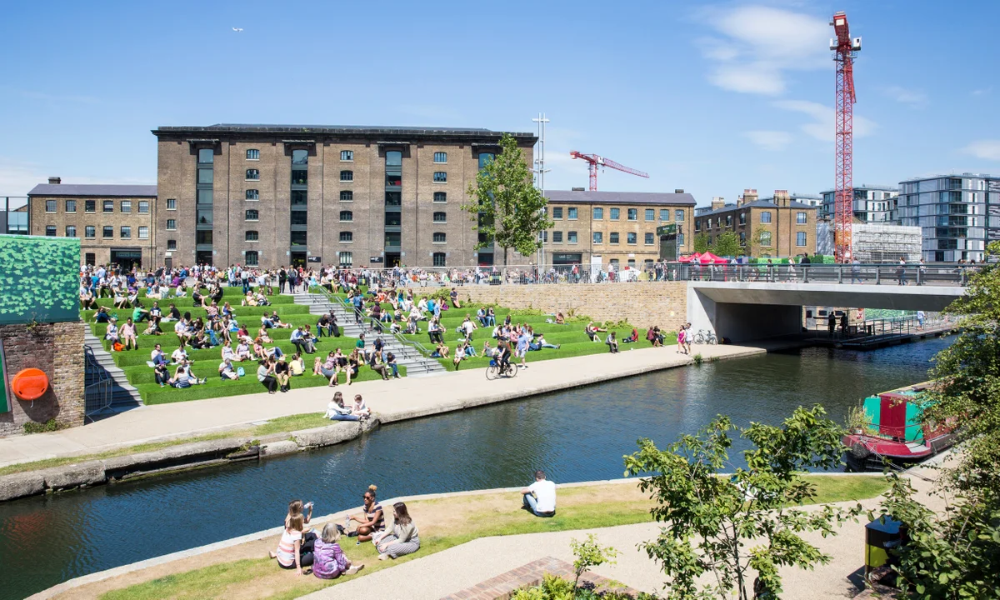
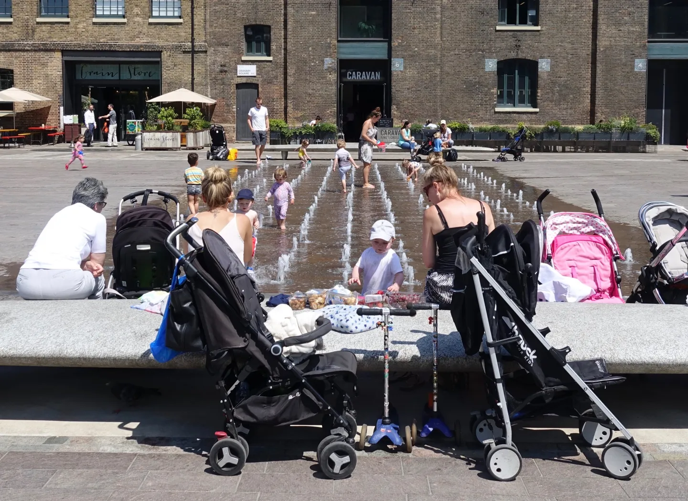

Who Belongs Here?
Live from a Changing Public Space
This live report explores how one public space is changing, and what that reveals about power, access, and belonging. Filmed on location, it will document a site in transition (a regeneration area, a redeveloped high street, a privatised plaza, or a place shaped by hostile architecture) through observation, short interviews, and visual evidence.
The report will ask: who benefits from these changes, and who is pushed out? What do design choices such as signage, barriers, surveillance, and security communicate about who is welcome? It will include a balanced mix of voices, for example residents, workers, visitors, local businesses, and where possible a council or site representative.
The project will follow ethical reporting (clear consent, respectful questions, anonymising when needed), avoid sensationalism, and end with a clear conclusion grounded in what is seen and heard on site.

I arrive on site and begin with a slow, continuous walk-through, describing what is immediately visible and how the space feels to move through. I note who is present, what people are doing, and where activity gathers or disappears.
I point out design features such as benches, fences, signage, lighting, cameras, and any private security presence. I capture wide shots for context, then closer details that suggest rules or control, while narrating first impressions clearly.
To add wider context, I will refer to this Guardian Cities article on privately owned public spaces and how they shape access and behaviour in cities: The privatisation of cities' public spaces is escalating. It is time to take a stand!
